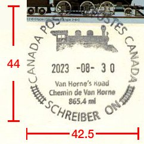

Schreiber PO pictorial cancel
Van Horne's Road – Chemin de Van Horne – 865.4 mi
- Status
- Active
- Run dates
- 2020-01-01 to present
- Design
- "Van Horne's Road / Chemin de Van Horne / 865.4 mi"; train, railway
- Ink colour
- Black
- Designer
- Unknown
- Post office
- Schreiber PO
319 Scotia St
Schreiber, ON
P0T 2S0 - Subjects
- train, railway, transportation, steam locomotive
Collect it by mail. Send your stamped covers, with a stamped return envelope, to the post office address above. How to collect pictorial cancels by mail · en français
 Kaministiquia POForest
Kaministiquia POForest Echo Bay POHome of the Loon Dollar Monument
Echo Bay POHome of the Loon Dollar Monument Schumacher POVersion 1
Schumacher POVersion 1 Schumacher POVersion 2
Schumacher POVersion 2